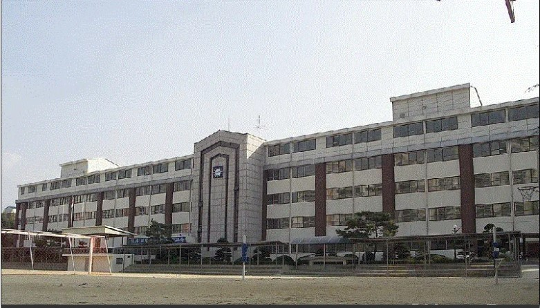

크게 본동과 후동으로 나뉜다. 운동장쪽이 본동, 그 뒤가 후동으로 불리는데 후동은 본동보다 더 나중에 지어졌지만 호불호가 갈린다. 1학년들이 사용하는 본동 5층은 다른 층보다 화장실이 작고, 바닥의 질이 별로 좋지 않아 맨발로 다니면 발에 가시가 굉장히 많이 박힌다. 다만 화장실이 다른 층보다 훨씬 좋아서 타 층 학생들의 부러움을 산다. 후동은 전적으로 2학년 교실이다. 1학년은 2개 반을 제외하고 모든 반이 본동에 위치해있으며 본동 4~5층을 사용한다. 3학년은 본동 2~4층을 사용한다. 하지만 다목적 강당이 생기고 나서부터는 본동 2층의 남자반 쪽에 햇빛이 잘 들지 않는다. 충남고등학교와 마주보고 있는 까닭에 충남고에 있는 탄방중 졸업생이 가끔 탄방중을 향해 교사에게 안부인사를 전하기도 한다. 또한 다른 중학교는 수능 시험 때 늦게라도 학교를 가지만 탄방중학교는 수능시험장인 충남고와 붙어있기 때문에 아예 재량휴업일로 지정되어 타 중학교의 부러움을 한몸에 받는다.